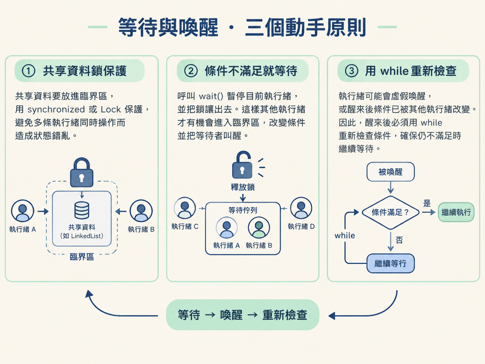
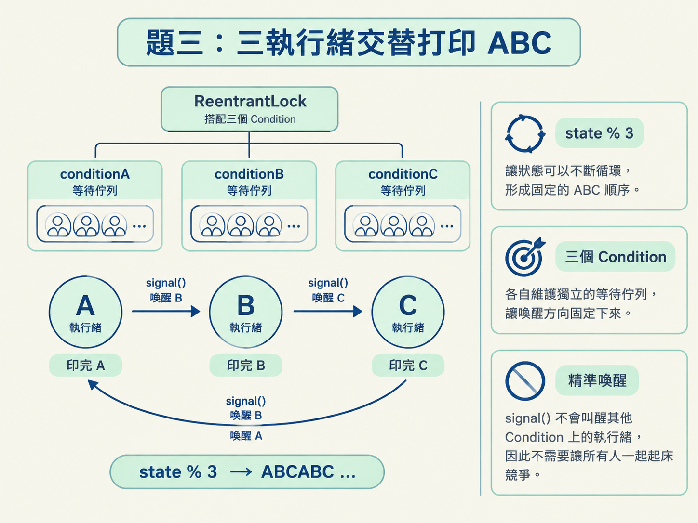

面試中常見的併發題，表面上各不相同：有時是生產者消費者，有時是多條執行緒輪流打印數字，也可能是三條執行緒依序印出 ABC。實際上，它們都在考同一件事：多條執行緒如何安全地共享資料，並在「還沒輪到自己」時先等待。
這一節會一步步完成三個實作：
synchronized 搭配 wait/notifyAll 完成生產者消費者。wait/notifyAll，讓 N 條執行緒依序打印數字。ReentrantLock 搭配多個 Condition，讓三條執行緒交替打印 ABC。開始前，先確認你知道兩件事：synchronized 可以保護臨界區，讓同一時間只有一條執行緒進入；而物件鎖上的 wait／notify，會在等待時釋放鎖，醒來後再重新搶鎖。
這三題雖然長相不同，正確寫法都離不開下面三個原則。
LinkedList 本身不是執行緒安全的。多條執行緒會同時操作它時，必須用 synchronized 或 Lock 保護，避免同一時間有人放入、有人取出而造成狀態錯亂。wait() 會暫停目前執行緒，同時把鎖讓出去。這樣其他執行緒才有機會進入臨界區，改變條件並把等待者叫醒。若等待時仍霸佔著鎖，其他執行緒就只能全部卡在門外。while，不要用 if。 執行緒可能在沒有真正收到通知時醒來，這叫虛假喚醒；即使確實收到通知，醒來前也可能已經有另一條執行緒先改變了共享資料。因此，醒來後必須重新檢查條件。用 while 才能確保條件仍不滿足時，繼續等待。
先處理最經典的情境：倉庫有固定容量。倉庫滿了，生產者不能再放；倉庫空了，消費者不能再取。有人完成工作後，就要通知可能正在等待的執行緒。
import java.util.LinkedList;
class Storage {
private final int MAX_SIZE;
private final LinkedList<Object> list = new LinkedList<>();
public Storage(int maxSize) { this.MAX_SIZE = maxSize; }
public synchronized void produce() throws InterruptedException {
while (list.size() == MAX_SIZE) { // 滿了就等，醒來再檢查
this.wait();
}
list.add(new Object()); // 幹活：放一個產品
this.notifyAll(); // 通知：可能有人在等空的
}
public synchronized void consume() throws InterruptedException {
while (list.size() == 0) { // 空了就等，醒來再檢查
this.wait();
}
list.removeFirst(); // 幹活：取一個產品
this.notifyAll(); // 通知：可能有人在等滿的
}
}produce() 和 consume() 都宣告成 synchronized，所以同一時間只有一條執行緒能修改 list。
生產者先檢查倉庫是否已滿。若已滿，就進入 while，呼叫 wait() 並釋放鎖；等消費者取走產品、有人通知後，再重新檢查容量。若還是滿的，就繼續等待。
消費者的邏輯相反：倉庫是空的，就先等待；有產品可取時，才呼叫 removeFirst()。
這裡不能把 while 改成 if。例如生產者被喚醒後，在它重新拿到鎖之前，可能已經有另一條生產者先把倉庫塞滿。若只檢查一次，醒來後就可能在滿倉庫中繼續放入產品，造成容量超限。消費者同樣可能醒來後發現倉庫又空了，因此也要重新判斷。
接著把問題改成輪流打印：有 N 條執行緒，編號從 0 到 N-1。它們要依序印出 0、1、2……直到指定上限，不能因為執行緒切換而打亂順序。
public class NumberPrinter {
private int currentNumber = 0;
private final int limit;
private final int threadCount;
public NumberPrinter(int limit, int threadCount) {
this.limit = limit;
this.threadCount = threadCount;
}
public void print(int threadId) {
while (currentNumber <= limit) {
synchronized (this) {
if (currentNumber > limit) return; // 進鎖後再確認一次
if (currentNumber % threadCount == threadId) {
System.out.println("Thread-" + threadId + " 印出 " + currentNumber);
currentNumber++;
this.notifyAll(); // 廣播，讓大家重算
} else {
this.wait(); // 不是我的活，讓鎖去睡
}
}
}
}
}這題的分工規則由取模決定：
currentNumber % threadCount == threadId。
假設有三條執行緒：
0 % 3 = 0，交給 0 號執行緒。1 % 3 = 1，交給 1 號執行緒。2 % 3 = 2，交給 2 號執行緒。3 % 3 = 0，再回到 0 號執行緒。取模就像一個自動循環的接力棒，不需要另外寫一大串 if-else 來記錄「現在輪到誰」。
這題若使用 notify()，就可能隨機叫醒錯的執行緒，最後讓所有執行緒一起睡死。
例如 0 號執行緒印完 0，將數字改成 1，接著呼叫 notify()。如果它剛好叫醒 2 號執行緒，2 號檢查後會發現 1 % 3 = 1，現在不是自己該做的工作，於是又回去等待。
問題在於，真正該工作的 1 號執行緒可能從頭到尾都沒有被叫醒。結果是 0 號已經睡下去，1 號也在等待，2 號再次等待，程式便卡住了。
notifyAll() 則會把所有等待中的執行緒叫醒。2 號發現還沒輪到自己，就回去等待；1 號發現條件符合，便印出數字並把狀態往前推進。
廣播會帶來一些額外的喚醒和上下文切換，但在「下一個合適的執行緒不固定」時，這是值得的代價。它保證真正該動的人有機會重新檢查條件，維持程式的活性。
最後把輪流打印改成固定順序：三條執行緒分別負責 A、B、C，輸出必須是 ABCABC...。
這次不想把所有等待中的執行緒都叫醒，而是希望 A 印完只叫醒 B，B 印完只叫醒 C，C 印完再叫醒 A。這種「點名下一棒」的做法叫做精確喚醒。
synchronized 搭配 notify() 只能從同一個等待集合中隨機喚醒一條執行緒；搭配 notifyAll() 又會全部叫醒。因此，這裡改用 ReentrantLock，讓同一把鎖建立三個不同的 Condition。
import java.util.concurrent.locks.*;
public class ABCPrinter {
private int state = 0; // 0=A, 1=B, 2=C
private static final int PRINT_COUNT = 10;
private final Lock lock = new ReentrantLock();
private final Condition conditionA = lock.newCondition();
private final Condition conditionB = lock.newCondition();
private final Condition conditionC = lock.newCondition();
private void print(String name, int targetState, Condition current, Condition next) {
for (int i = 0; i < PRINT_COUNT; i++) {
lock.lock();
try {
while (state % 3 != targetState) { // 不該我，就等
current.await();
}
System.out.print(name);
state++; // 交棒
next.signal(); // 精準叫下一個
} catch (InterruptedException e) {
e.printStackTrace();
} finally {
lock.unlock(); // 一定要解鎖
}
}
}
public void printA() { print("A", 0, conditionA, conditionB); }
public void printB() { print("B", 1, conditionB, conditionC); }
public void printC() { print("C", 2, conditionC, conditionA); }
}三個 Condition 分別代表 A、B、C 的等待佇列。conditionA 上等待的是 A 執行緒，其他兩個 Condition 也是同樣的概念。
state 則是現在輪到誰的狀態機：
state = 0 時，A 通過檢查，印出 A，將 state 改成 1，再呼叫 conditionB.signal()。state = 1 時，B 通過檢查，印出 B，將 state 改成 2，再呼叫 conditionC.signal()。state = 2 時，C 通過檢查，印出 C，將 state 改成 3，再呼叫 conditionA.signal()。3 % 3 = 0，輪次回到 A。state % 3 讓狀態可以不斷循環，而三個 Condition 則把喚醒方向固定下來。signal() 不會叫醒其他 Condition 上的執行緒，因此不需要讓所有人一起起床競爭。

即使使用了精確喚醒，await() 外面仍然要用 while。精確喚醒只代表「通常會叫對人」，不代表可以省略條件重查；防止虛假喚醒仍然是必要的標準寫法。
做完後，你應該看到穩定而且可預期的結果：生產者消費者不會超出容量，也不會從空倉庫取資料；N 執行緒打印的數字會嚴格遞增；ABC 打印則會規律地重複 ABCABC。若程式偶爾卡住或順序錯亂，優先檢查等待條件是否用了 while，以及喚醒策略是否選對。
三題共用同一個骨架：先用鎖保護共享狀態，再在鎖內檢查「現在輪到我了嗎」或「條件滿足了嗎」。如果條件不成立，就用wait／await等待並讓出鎖；條件成立時，執行工作、更新狀態，再喚醒其他執行緒。生產者消費者使用synchronized+wait/notifyAll；N 執行緒打印使用取模決定誰該動，並用notifyAll避免叫醒錯人後卡死；ABC 打印則使用ReentrantLock搭配多個Condition，以state % 3傳遞接力棒。貫穿三題的鐵律是：等待條件一定要放在while裡。
這一節先聚焦在「怎麼組合工具，寫出正確的等待與喚醒」。wait 為什麼會釋放鎖、Condition 為什麼能分開等待佇列，以及 AQS 在背後如何排隊，會在鎖與 AQS 的內容中深入說明。
等待與喚醒處理的是「誰先誰後」。下一節會換一種併發問題：物件本身是否被正確建立。DCL 單例的關鍵敵人是指令重排序，而用來阻止它的關鍵字是 volatile。